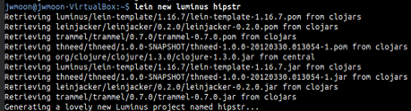
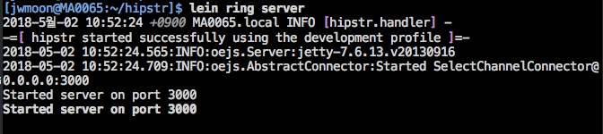

Getting Started With Luminus
Table of Contents
1 Luminus 라이닝언 템플릿을 사용해서 웹 어플리케이션 생성하기
1.1 Leiningen?
- Leiningen 은 클로저의 빌드 및 태스크 툴
- JAVA의 Maven 또는 Ruby의 Rake와 비슷하게 의존성 관리 및 프로젝트 생성 등을 도와준다.
- 개발환경에 미리 설치되어 있어야 한다. OS별로 설치방법이 조금 다르므로 인터넷 검색을 통해 설치하자.
lein $TASK $TASK_ARGUMENTS
1.2 웹 어프리케이션 생성하기
- 최신버전이 아닌 책에서 쓰이는 버전으로 라이브버리들이 설치되도록 할 필요가 있다.
- ~/.lein/profiles.clj 를 만들어 다음 코드를 넣어둔다.
{:user {:plugins [[luminus/lein-template "1.16.7"]]}}
어플리케이션은 생성하는 명령어는 다음과 같다.
lein new [$TEMPLATE_NAME] [$PROJECT_NAME] lein new luminus hipstr

1.3 REPL 실행하기
lein repl
2 Luminus가 사용하는 유명한 라이브러리를 소개
| 순번 | 라이브러리 | 설명 |
|---|---|---|
| 1 | lib-noir | 웹 어플리케이션을 만드는 데 필요한 유용한 라이브러리를 제공, 라우팅, 리다이렉션, 정적 리소스, 패스워드 해싱, 파일업로드, 세션, 쿠키 등 |
| 2 | ring-server | web application library, 자바의 Servlet API 와같은 로우 레벨 웹 인터페이스를 제공 |
| 3 | selmer | HTML 템플릿 라이브러리, 동적인 html 페이지를 작성할 때 사용 |
| 4 | timbre | 클로저의 로깅 라이브러리 (자바의 log4j와 같은 듯) |
| 5 | tower | timbre 와 비슷하고, 국제화 기능을 추가로 제공해준다. |
| 6 | markdown-clj | html로의 마크다운을 지원 (<b>태그 대신에 *를 지원하는 마크다운 문법) |
| 7 | environ | 하나의 어플리케이션을 다양한 환경에서 빌드할 수 있도록 지원해주는 툴(로 추측) |
| 8 | cronj | 크론 스케줄링 지원 |
| 9 | noir-exception | 로그에서 exception이 발생한 부분을 하이라이팅 처리 |
| 10 | prone | 훌륭한 exception reporting 을 제공 |
3 Luminus 가 만들어주는 디렉토리 구조 및 파일
hipstr 디렉토리에서 다음 명령어로 폴더구조를 볼 수 있다.
find . -print | sed -e 's;[^/]*/;|____;g;s;____|; |;g'
크게 resouces, src, test 세 개의 서브 디렉토리를 생성한다.
| 순번 | 경로 | 설명 |
|---|---|---|
| 1 | resources | 프론트엔드를 구성하는 파일들 |
| 2 | resources/public | js, css, image 등, 이 폴더만이 클라이언트에 의해서 접근 가능 |
| 3 | resources/templates | Selmer 템플릿 파일들 (서버 페이지) |
| 4 | src/hipstr | 어플리케이션 서버단 소스 코드 |
| 5 | src/hipstr/util.clj | hipstr.util 이라는 네임스페이스를 선언하고 있다. 여기에 다양한 유틸 펑션들을 추가할 수 있다. 기본적으로 md->html 이라는 펑션을 제공한다. |
| 6 | src/hipstr/session_manager.clj | 30분 간격으로 사용되지 않는 세션을 지우는 cronjob이 등록되어 있다. |
| 7 | src/hipstr/layout.clj | hipstr.layout 이라는 네임스페이스를 선언하고 있다.HTTP 응답 body를 구성하는 render 펑션을 제공한다.render 펑션은 Selmer 템플릿을 사용한다.제너럴한 기능을 제공하므로 여기에 추가 비즈니스 로직을 작성할 경우는 거의 없을 것이다. |
| 8 | src/hipstr/middleware.clj | 미들웨어는 요청이 메인 어플리케이션에서 처리되기 전에 수행되는 펑션이다. (자바에서 필터나 인터셉터와 비슷한 것 같다.) hipstr.middleware 네임스페이스를 선언하고 있다. 이 네임스페이스는 크게 두 가지 책임을 가지고 있다. 하나는 모든 미들웨어들을 통합(tie together) 하는 것이다. 다른 하나는 새로운 미들웨어를 추가하기 위한 장소를 제공하는 것이다. |
| 9 | src/hipstr/routes/home.clj | routes 폴더의 프로그램들은 URL과 핸들러를 연결해주는 역할을 한다. hipstr.routes.home 네임스페이스를 선언하고 있다. 메인화면을 구성하는 home-page 펑션과 about를 구성하는 about-page 펑션을 제공하고 있다. |
| 10 | src/hipstr/handler.clj | hipstr.handler 네임스페이스를 선언하고 있다. |
| 11 | src/hipstr/repl.clj | hipstr.repl 네임스페이스를 선언하고 있다. hipstr.handler와 비슷하기 때문에 초보자들이 많이 헷갈려하는 부분. hipstr.repl은 Clojure REPL로 개발용 서버를 시작하거나 종료할 수 있게 해준다. 바로바로 수정사항을 확인할 수 있기 때문에 잘쓰면 아주 요긴할 듯! (컴파일->디플로이->서버재시작의 귀찮음이 없다는 것이다!) |
| 12 | test | 어플리케이션 테스트 코드 |
4 개발환경에서 웹 어플리케이션 구동하기
lein ring server
- 참고 : lein help ring 으로 모든 서브 태스크 목록을 볼 수 있다.
- 각종 의존 라이브러리들이 다운로드 된 후 내장된 제티서버가 3000포트로 실행되고 자동으로 웹 브라우저가 켜지면서 localhost:3000으로 접속한다.. (처음엔 몇 분걸린다.)
